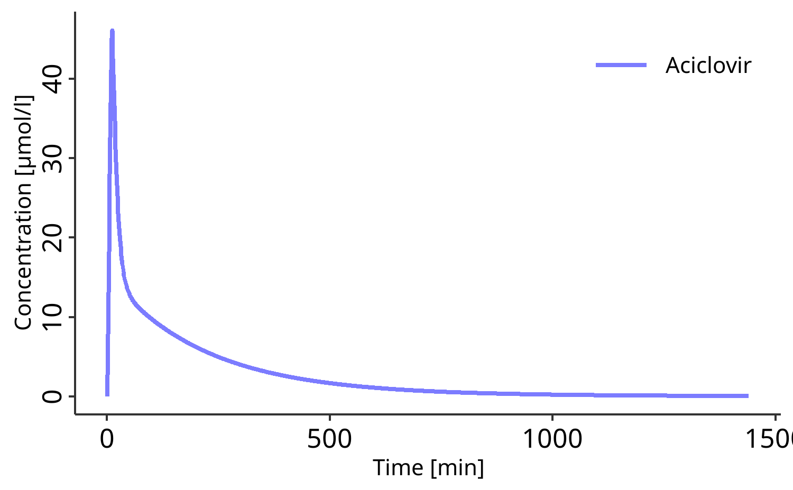

The esqlabsR package facilitates and standardizes the modeling and simulation of physiologically based kinetic (PBK) and quantitative systems pharmacology/toxicology (QSP/T) models implemented in the Open Systems Pharmacology Software (OSPS).
The esqlabsR package is designed for PBK modelers who use the OSPS suite. By using this package, you can streamline your modeling and simulation (M&S) workflow and ensure standardized and reproducible practices.
The package provides functions to:
- Design, import and run Simulations,
- Generate standardized plots and other reporting materials,
- Interact with the OSPS features using simple Excel files.
To get started with the esqlabsR package, please read the vignette("esqlabsR").
Installation
Currently, esqlabsR is available only for Windows system. You can install the package by running:
# {esqlabsR} and its Open Systems Pharmacology Suite's dependencies relies on
# {rClr} (https://github.com/Open-Systems-Pharmacology/rClr) which is not
# available on CRAN.
# Therefore, these must be installed from github using `{remotes}`.
install.packages("remotes")
install.packages("https://github.com/Open-Systems-Pharmacology/rClr/releases/download/v0.9.2/rClr_0.9.2.zip",
repos = NULL,
type = "binary"
)
remotes::install_github("esqLABS/esqlabsR@*release")Get the latest development version with:
remotes::install_github("esqLABS/esqlabsR")Note: For projects created for version 3 of esqlabsR package, install esqlabsRLegacy.
Usage
# load esqlabsR
library(esqlabsR)
# Load excel-based configuration
my_project_configuration <-
createDefaultProjectConfiguration(example_ProjectConfiguration())
# Setup simulation scenarios
my_scenarios <-
createScenarios(
readScenarioConfigurationFromExcel( # Read scenarios from excel file
scenarioNames = "TestScenario", # Import the scenario defined as "TestScenario"
# in the excel file
projectConfiguration = my_project_configuration
)
)
# Run simulations
my_simulation <- runScenarios(
scenarios = my_scenarios
)
# Initialize a `DataCombined` object to store simulation results
my_datacombined <- DataCombined$new()
my_datacombined$addSimulationResults(my_simulation$TestScenario$results,
names = "Simulated",
groups = "Aciclovir"
)
# Plot simulation results
plotIndividualTimeProfile(my_datacombined)
Learn More
To get started, first read vignette("esqlabsR"). Then read more about the specific topics:
- Start with
vignette("esqlabsR-workflow-overview")to learn about the esqlabsR’s streamlined workflow. -
vignette("esqlabsR-project-structure")details the structure and purpose of each component file and directory of an esqlabsR project. -
vignette("esqlabsR-design-scenarios")explains how you can design your own simulations only using excel files. -
vignette("esqlabsR-run-simulations")describes all you need to know to run your customized simulations. -
vignette("esqlabsR-plot-results")explains how to generate visualizations from simulations.
Related Work
esqlabsR relies on the following Open Systems Pharmacology R packages:
Contributing
- Follow the OSPS-R coding standards.
- Some additional useful information can be found here.
Code of Conduct
Please note that the esqlabsR project is released with a Contributor Code of Conduct. By contributing to this project, you agree to abide by its terms.